Red Velvet
Galleta roja con chips de chocolate de leche y chocolate blanco.
$4.000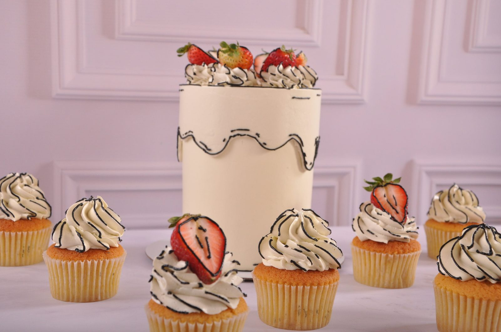
Buen gusto que provoca deseo
Pastelería de autor en Moniquirá, Boyacá. Galletas, tortas y cupcakes hechos con intención, para regalar (o para consentirte) como algo realmente especial.
Nos dedicamos a crear detalles dulces hechos con intención. Desarrollamos productos donde el sabor, la estética, la calidad, la frescura y la dedicación tienen la misma importancia — piezas que despiertan deseo y hacen sentir especial tanto a quien las recibe como a quien las regala.
Cuatro sabores, una tentación. Nuestras galletas insignia.
También tenemos merengues de yogurt, en presentación blanca lisa o de color en forma de estrella — $2.500.
Galletas y merengues en la Carrera 7 #18-68, pasos arriba del semáforo del parque Santander, en Moniquirá. También puedes encargarlas por WhatsApp.
Dos galletas de temporada que se comen con ganas: una llena de misterio y otra con sabor a otoño.
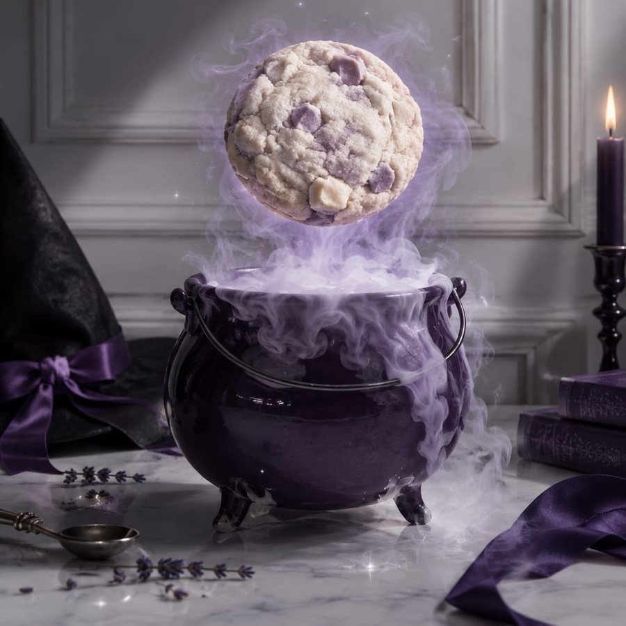
Un misterio en cada mordida.
Una galleta de vainilla con un toque inesperado, chocolate en cada bocado y un secreto que preferimos dejar en tus manos.
Pedir Dulce Truco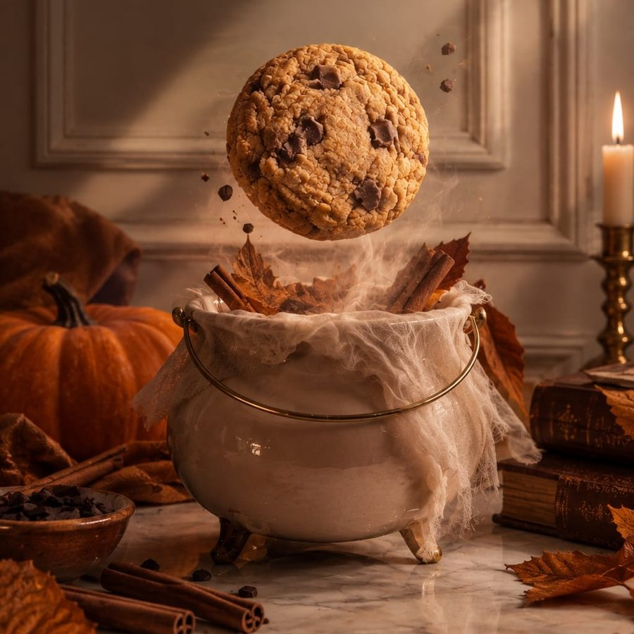
El otoño también se muerde.
Una galleta inspirada en los tonos y aromas del otoño, con el carácter de la calabaza, el abrazo de las especias y generosos trozos de chocolate.
Pedir OtoñoDos tamaños: 10 y 20 porciones.
Las tortas De la Casa están pensadas para saber a infancia: a ese pastel de la mesa familiar, a cocina con olor a horno y a la sensación de que todo está bien. Sabores de casa, hechos con ingredientes de verdad y vestidos con un acabado que los vuelve especiales.
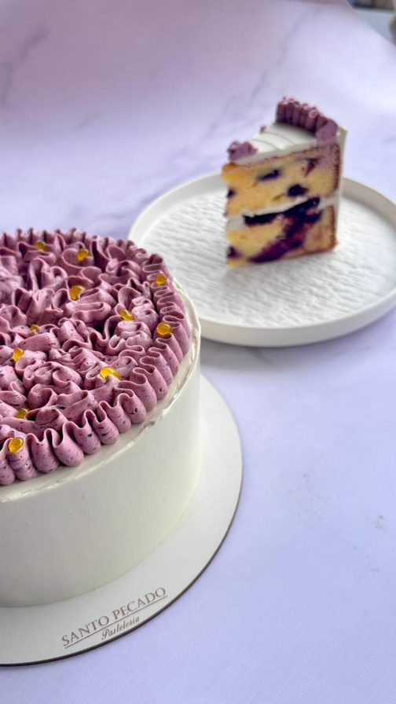
Pastel suave de limón con arándanos, relleno de compota de frutos del bosque, crema ligera de queso y crema de frutos rojos.
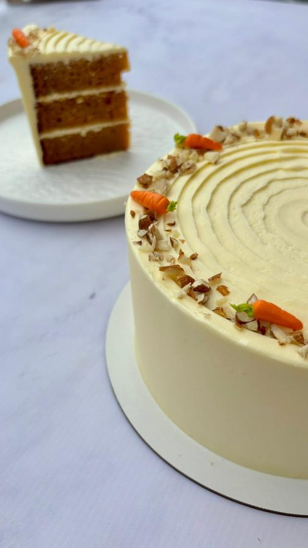
Torta especiada y húmeda que recuerda los sabores de casa, con frosting de queso, decorada con frutos secos y zanahorias dulces.
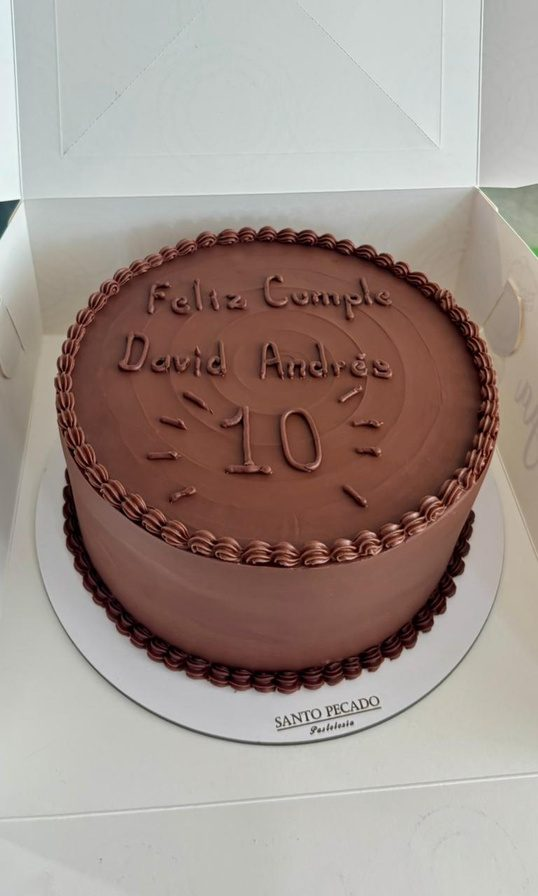
Pastel chocolatoso de miga húmeda, con ganache semiamarga de chocolate real y decoración clásica.
¿Tu celebración tiene fecha? Escríbenos y reservamos tu pastel; lo recoges en la puerta de la pastelería. ¿Prefieres algo más pequeño? Mira nuestras cajas de cupcakes.
Para decir "pensé en ti" sin decir una palabra: cajas de cupcakes y pequeñas creaciones.
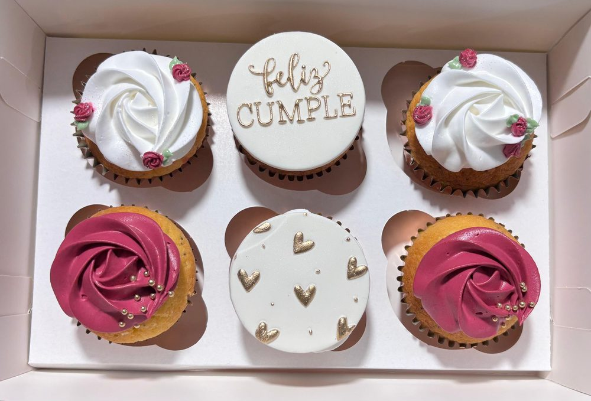
Seis piezas con decoración a juego con la ocasión — cumpleaños, aniversarios o solo porque sí.
Ver cupcakes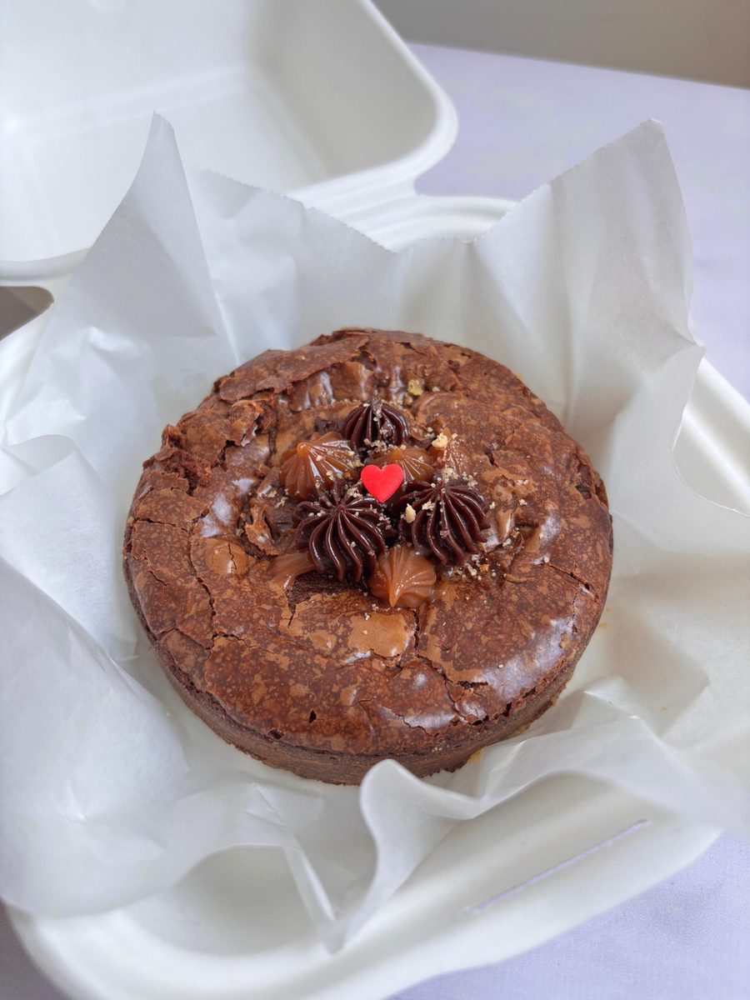
Brownies y pequeños postres en tandas reducidas.
Pasteles con decoración personalizada, creados para tu ocasión.
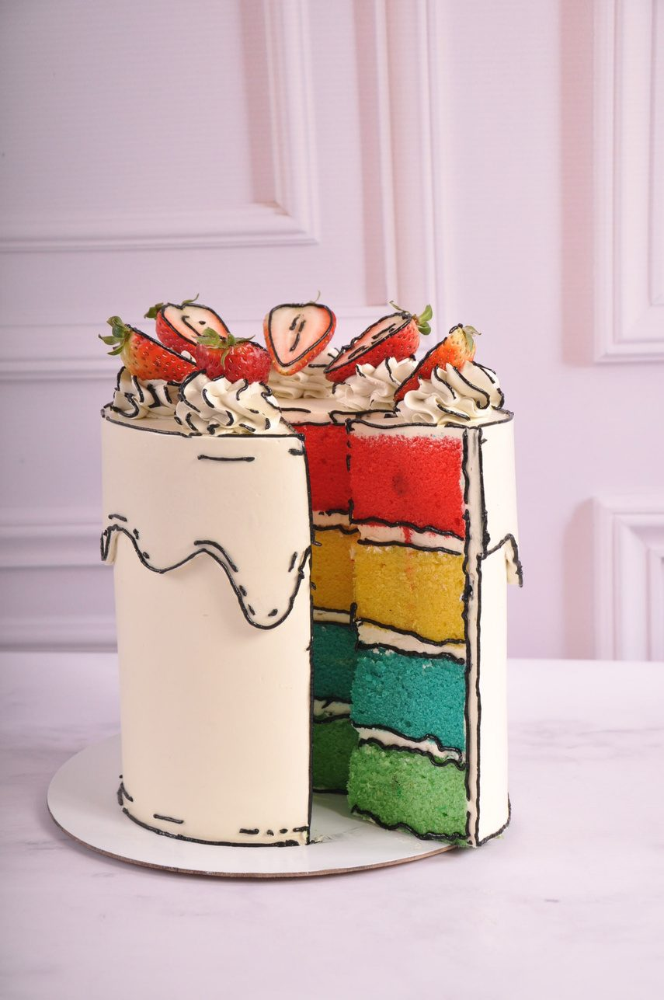
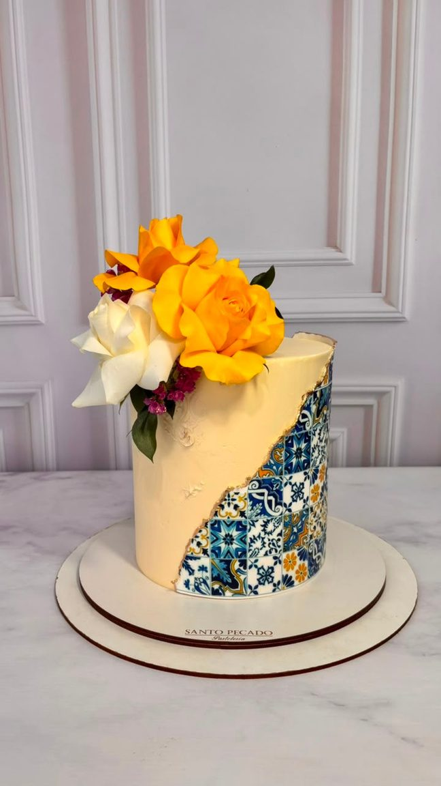
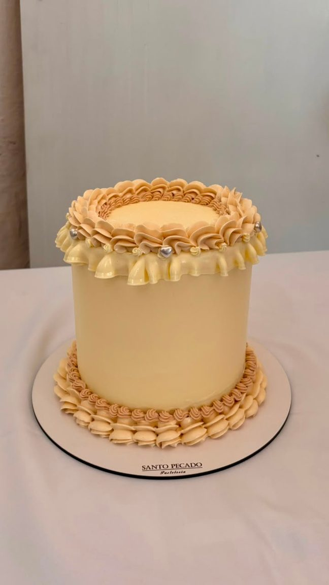
Cada pastel se prepara por pedido, con mínimo 2 días de anticipación.
El precio cambia según el tipo de decoración que elijas. Cuéntanos tu idea y te cotizamos.
Santo Pecado combina dos ideas: lo Santo — elegancia, cuidado, calidad y delicadeza — y lo Pecado — tentación, placer e intensidad. De ahí nacen piezas delicadas en el detalle e intensas en el sabor.
Reservar tu pedido es muy fácil.
Cuéntanos por WhatsApp qué te gustaría y para cuándo. Cada pedido se prepara fresco y a tu medida.
Cupcakes sencillos con 1 día de anticipación y cupcakes temáticos con 2 días. Para tortas y galletas, escríbenos y confirmamos tu fecha.
Tortas y cupcakes se entregan en la puerta de la pastelería, en Moniquirá. Galletas y merengues los encuentras en nuestro punto de venta.
Los cupcakes también pueden ir a domicilio. El valor del domicilio no está incluido en el precio de la caja.